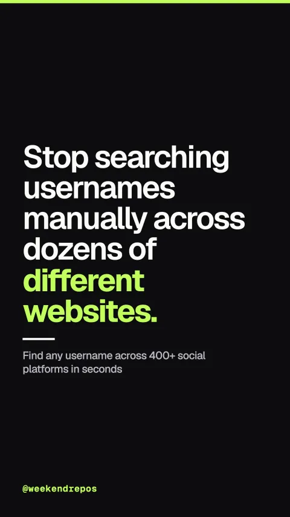

sherlock-project/sherlock
Find any username across 400+ social platforms in seconds

Stop searching usernames manually across dozens of different websites.
Manually searching usernames across hundreds of websites is slow and incomplete.
First, checking whether a handle exists across GitHub, Reddit, TikTok, and forums requires hundreds of manual browser queries that miss dormant profiles.
Manual search · High latency & missed dormant accounts
Sherlock scans four hundred social networks simultaneously with async request pools.
Second, Sherlock uses asynchronous Python coroutines to query hundreds of platform endpoints concurrently without relying on paid proprietary APIs.
Async request engine · Zero rate-limit bottlenecks
Built-in error heuristics filter false positives from HTTP redirects and vanity blocks.
Third, platforms often return deceiving two hundred HTTP responses for missing profiles. Sherlock inspects response headers and error DOM patterns to eliminate false positives.
Heuristic validation · HTTP redirect & DOM detection
Over eighty-six thousand stars. Completely open source under the MIT license.
Sherlock has over eighty-six thousand GitHub stars, written in Python under the permissive MIT license.
sherlock-project/sherlock · MIT · 86.4k stars · Python